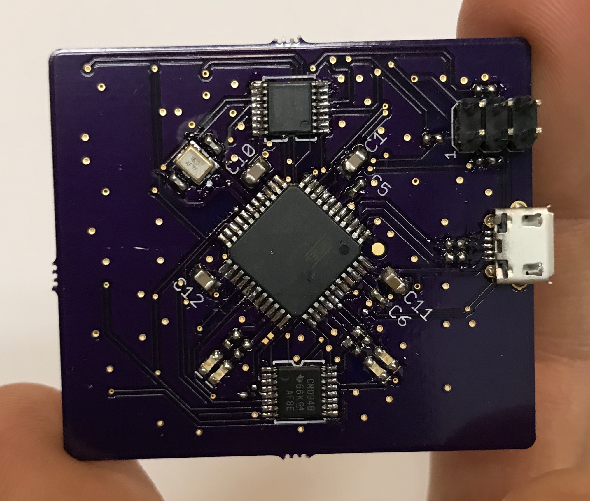

A Tiny Cloud

One day I was thinking up silly excuses to use tiny microcontrollers for things. I had been playing with TUN and TAP devices which make it easy to create arbitrary network devices using software on Linux. Thinking about the large computing power in modern clouds I thought it would be funny to make a cloud out of tiny, resource-constrained microcontrollers that worked the same way as the big clouds. Kind of like a bunch of kids in a trench coat pretending to be an adult, the microcontrollers could pretend to be real cloud hardware over the Internet.
To make it happen I designed a PCB that held 16 ATtiny4 microcontrollers, which each have 512 bytes of flash and 32 bytes of RAM and were set up to run at 8 MHz. They were connected via a two wire serial interface to an ATmega32U4, which has hardware support for USB.

The plan was to write a TUN driver which would talk to the ATtinys via the ATmega32U4 over USB the ATtinys could send and receive messages via their shared serial interface with the ATmega32U4 with very little overhead. Then the TUN driver would do most of the heavy lifting to assemble/disassemble IP packets and make the device appear to be a collection of 16 legitimate, ordinary hosts.
Unfortunately I was distracted by other projects before I finished the TUN driver.